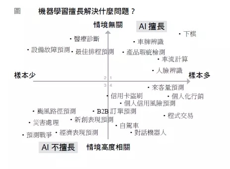

人工智慧
Table of Contents
1. 和AI聊聊天
1.1. ELIZA
1.2. ALICE
1.3. Mitsuku
2. AI, Machine Learning與Deep Learning
人工智慧、機器學習與深度學習是三個常被混為一談的概念，如圖1，深度學習是機器學習的一種類型，而機器學習又是人工智慧的一個分支，相較於機器學習，早期實作人工智慧的一種策略是專家系統(Expert System)。

Figure 1: AI, Machine, Deep Learning
2.2. AI
AI是一個涵蓋面極廣的名詞，從1964年MIT AI Lab的ELIZA對話機器人，到最近的自駕車，再到科幻電影中俱備人類情感的機器人都可以是AI的範圍。在實作上，AI 可以是簡單的 decision tree 或 rule-based 的專家系統(知識庫 + 推理機制)，也可以是包含數十億神經元的類神經網路。那麼，這和我們常聽到的機器學習、深度學習、神經網絡又有什麼關係呢？
2.3. 機器學習
在AI的發展中，人們想過以各種方式來達成讓機器具備人類智慧的目的，有人希望能將大量的人類智慧教給電腦，這部份包含了人類在各領域的知識以及推理規則；另一派學者則認為人類的智識大過於廣泛而且不斷的有新知識生成，與其把所有的知識教給電腦，不如讓電腦具備學習的能力，如此電腦就可以自己去學習新的知識，這便是所謂的機器學習。
在開發機器學習模型時，我們會基於觀測值計算出一些衍生變數(derived variables)，再將其加入決策判斷的條件中，以增加 model 的預測準確度。例如，由男生的身高體重判斷高血壓的機率，而 BMI 即為一更佳的衍生變數。而機器學習模型的成效往往取決於特徵工程的品質，但在某些領域下，特徵工程很難靠領域專家取得好的結果，例如非結構化資料以及序列資料：
- 非結構化資料：聲音、影像、影片
- 序列資料：sensor 資料、金融市場資料、交易資料
機器學習有各種不同的實作策略（演算法），而類神經網路就是其中之一。
2.4. 類神經網路與深度學習
如何讓電腦俱備學習能力？在實作上也有多不同策略，類神經網路就是希望藉由模擬人類腦神經結構的方式來達到這個目的的一種方式，Hinton 於 2006 年提出的 Boltzmann Machine 為一種多層神經網路。典型的類神經網路架構(如圖2)由輸入層、隱藏層、輸出層組成，學術界稱層數大於3的類神經網路為深度學習。

Figure 2: 類神經網路架構
所以，當你聽到深度學習這個名詞時，有兩件事是可以確定的：
- 這一定是機器學習
- 這一定是類神經網路
前面提到 在某些領域下，特徵工程很難靠領域專家取得好的結果 ，深度學習的強大之處就在於深度學習連特徵工程也可以自行完成，即，由原始資中自行產生衍生變數。
2.5. 深度學習
深度學習與其他機器學習方式最主要的差異在於能否自動進行「特徵工程」(feature engineering)
考慮採取傳統機器學習或深度學習時，一個重要關鍵是資料量，若資料量太小，深度學習不一定會有更好的表現。Google Translate 在訓練文件量少於一億篇時，傳統機器學習表現較佳；在文件量超過十億後，深度學習效果就超越傳統機器學習。

Figure 3: BLEU scores for English-Spanish systems trained on 0.4M to 385.7M words of parallel data. Source: Koehn and Knowles (2017) and GPU
2.6. Deep Learning 的概念於 2006 年提出，何以至 2012 年才得到有效應用？
- 計算速度: GPU 的計算能力由 2018 年起才有突破性的成長1
Figure 4: Floating-point operations per second for the CPU and GPU

Figure 5: Memory bandwidth for the CPU and GPU
- 大量數據
- 軟體
數學模型、軟體工具(Tensorflow)
3. AI的發展沿革
3.1. 三個里程碑
- 1950: 設定 AI 目標
- 1980: 以 Machine Learning 為主要手段
- 1980 - 1990: Neural Network
- 2006: Deep learning (ImageNet Classification with deep convolutioanl neural networks, 引用達上萬次)
- 2010: Deep Learning
3.2. AI 發展的起落
- 第一波(符號還輯)：把人類的知識與思考放入電腦
- 1956 年，John McCarthy
- 1957 年，Herbert A. Somin(諾貝爾經濟學奬得主)預言電腦能在十年內敗人類(西洋棋)，此預言於 1997由IBM Deep實現。
- 這階段的失敗原因：連人類自己都還搞不清楚自己的思考過程
- 1956 年，John McCarthy
- 第二波(專家系統)：讓電腦按照人類定義的規則做決策
- 1970 年，專家系統，一連串條件判斷的推導
- 第一波失敗原因：野心太大，這次讓電腦依照人類設定好的規則來思考
- expert system 在 1980 年代廣受應用，Fortune 500 大公司有三分之二將之應用於營運工作中，如訂單處理、信用卡徵審、稅務處理。
- 1990 年後 expoert system 逐漸勢微，原因是能力有限，距離人類心目中的人工智慧差距尚大。
- Polanyi’s Paradox(博藍尼悖論): We can know more than we cantell, i.e., many of the tasks we perform rely on tacit, intuitive knowledge that is diffucult to codify and automate.
- 1970 年，專家系統，一連串條件判斷的推導
- 第三波(機器學習)：電腦從資枓歸納規則，關鍵要素為資料與演算法
- 2006 年：Geofffrey Hinton 提出 Restricted Boltzmann Machine，成功訓練多層神經網路(multi-layer neural networks)，可用來描述更複雜的非線性函數，並稱之為深度學習(Deep Learning)。
- 2012 年 10 月,Hinton 帶兩個學生參力 ILSVRC 比賽，以深度學習配合 GPU 的運算速度拿下冠軍。
- ILSVRC: ImageNet Large Scale Visual Recongnition Challenge, 先讓程式看 120 萬張訓練照片，共 1000 種分類，接下來要求程式為 15 萬張測試照片進行分類。
月- 2013 年，Google 收購 Hinton 和他兩位學生創立的公司：DNNresearch
- 2015 年，Microsoft 在 ILSVRC 以 3.5%的錯誤率奪冠，首次超過人類(5%)。
以上參考: 人工智慧在台灣
- 2006 年：Geofffrey Hinton 提出 Restricted Boltzmann Machine，成功訓練多層神經網路(multi-layer neural networks)，可用來描述更複雜的非線性函數，並稱之為深度學習(Deep Learning)。
3.3. AI Development 大事記
3.4. AI 應用與影響
- Weak AI v.s. Strong AI
- Strong AI: 能思考、有主觀意識，又稱 General AI, FUll AI
- Tesla CEO Elon Musk: 2017 年 7 月在美國提倡規管 AI 發展的法案
- Strong AI: 能思考、有主觀意識，又稱 General AI, FUll AI
- AI 研究趨勢
- 大規模機器學習
- 深度學習
- 強化學習
- 計算機視覺(偵測)
- 自然語言處理
- 協作系統
- Iot 物聯網
- 交通 / 無人機
- 家庭 / 服務機器人
- 醫療: 長照、疾病判斷
- 教育
- 低資源社區
- 公共安全: 監視器
- 就業和勞資
- 娛樂
- 大規模機器學習
4. AI 的三大學派
4.1. 符號主義學派(知識圖譜: 模仿人類邏輯與抽像推理),
是指基於符號運算的人工智慧學派，他們認為知識可以用符號來表示，認知可以通過符號運算來實現。例如，專家系統等。
4.2. 連接主義學派(深度學習: 模仿大腦皮層神經網路)
是指神經網絡學派，在神經網絡方面，繼魯梅爾哈特研製出 BP 網絡之後，1987 年，首屆國際人工神經網絡學術大會在聖迭戈（San-Diego）舉行，掀起了人工神經網絡的第二次高潮。之後，隨著模糊邏輯和進化計算的逐步成熟，又形成了「計算智能」這個統一的學科範疇。
4.3. 行為主義學派(強化學習: 模仿生物奬懲學習機制)
是指進化主義學派，在行為模擬方面，麻省理工學院的布魯克教授 1991 年研製成功了能在未知的動態環境中漫遊的有 6 條腿的機器蟲。
5. AI 的五大迷思
5.1. 迷思一：資料等於價值
資料若沒有經過妥善的加工處理和萃取分析，本身並無太大價值，需要將對的資料用在對的場景。例如，電信公司的通聯記錄，行銷公司只會拿來做行銷，治安機關則可以拿來追查詐騙集團；又如 X 光片的判斷品質決定了 AI model 的成效。資料等於價值的另一反例為 AlphaZero。
5.2. 迷思二：牽涉電腦與資料就是 MIS 部門的工作
AI 的導入需要跨部門支持，其開發團隊需要資料科學家(數學、統計)、領域專家(領域知識)、資訊人員(程式設計、資料庫)，最後在驗證模型成效時更需要跨部門的支持。
5.3. 迷思三：資料分析就是產出報表
資料分析不應只限於公司內部資料庫中的結構化資料，而應包含非結構化資料(影像、聲音、影片、文字、互動)
5.4. 迷思四：電腦決策不可能贏過人的專業經驗
主要原因在人類的短期記憶有限、能留意到的弱訊號太少，此外，有些工作需要極快的反應時間(如股市交易)。1995 年 Amazon 曾讓 50 位資深編輯就「推薦書單」與演算法進行 PK，自此後 Amazon 所有商品推薦都由機器學習進行。
5.5. 迷思五：導入系統或平台就可以解決營運問題
AI 不是一個資訊系統(如 ERP)，而是一種根據已知預測未知的方法，它沒有標準做法，其應用情境與方式會隨著企業的狀況與及需求有所不同。因此，問題不在「有沒有導入 AI」，而是「AI 應用的深度與廣度」。
6. AI 擅長的解題領域
6.1. 與情境無關的領域
- 如棋類遊戲等封閉系統就是與情境無關；反之，個人商品推薦則否，因為影響使用者是否購買特定商品的因素有太多是電商觀測不到的，例如，當天的心情。同理，戰爭的爆發其背後的因素也有可能出人意料之外，如特洛伊。
- 一些工作雖然與情境相關，但卻因為這些情境可人為控制，所以也適合以 AI 解決，如，人臉辨識可能因為拍照時人的角度、戴口罩、太陽眼鏡、帽子、背景光線、天氣等因素而導致辨識困難，但這些情境因素都可以事先控制，如：要求對象拿下口罩正向面對攝影機。
6.2. 樣本數多的領域
- 如颱風一年最多 20 個，累積 50 年也不過 1000 個，不足以建立高複雜度且精確的學習模型(尤其牽涉的的變數很多時)

Figure 6: AI 擅長的解題領域
7. AI 各項產業應用

Figure 7: 各產業投資 AI 效益
7.1. 製造業
- 瑕疵檢測：金屬表面、玻璃、印刷電路、電子產品、牛仔褲、農產品，由 AI 取代人眼。在某家製造商的資料中，人眼檢測瑕疵漏網率為 5%、AI 為 0.01%；人眼檢測速度為每天 30 萬張影像、一台 10 萬左右的電腦每天可檢測 1440 萬張。
- 自動流程控制：製造業共通的挑戰為設人竹廿月參數的調控及最佳化，或稱為自動流程控制。生產流程中，如馬達轉速、電流、電壓、環境溫度…等等需要監控、會影響產品良率的因素可能高達上千個，這些高維度的因素彼此又有交互作用(通常維度高過 5 個，且參數間有交互作用，人類就無法精確掌握)，而且製程可能很長，調整參數後可能隔天才能確認。AI 介入化工製程的例子可以將良率由六成調至 98%2。
- 預測性維護：包括預測機器何時會出錯以提前進廠保養、預測耗才何時更換最為有利。此類工作涉及訊號鄋理，如：監控馬達電壓、轉速、震動、聲音來判斷馬達是否即將固障；監控機器手臂行程順暢度、夾具穩定度來判斷機器手臂是否有固障徵兆。2
- 原料組合最佳化：製造業的工作在於取得一種或多種原料，經過物理或化學加工過程後製成產品；但每批原枓可能來自不同供應商、品質、等級或特性可能有所差異，如何在各原料、供應商、等級、成本的排列中找出最高 CP 值的組合即為重要工作。以染整業為例，新的布料與顏色平均要花 3~7 天的打色嚐試才能達到客戶允收範圍，以第一次打色為例，軟體模擬加上師傅經驗調整，成功率約七成；而藉由以深度學習建出模型來描述布料、目標顏色及染料濃度間的關係，可以將成功率達到九成2。
7.2. 零售與金融業
零售及金融之所以相對容易切入 AI 是因為這兩個產業的核心業務就是在處理資訊流。
依據 Gartner 的報告，資料分析可以分四個層次：
- 描述：評估現況及了解問題。解釋發生了什麼？
- 解釋：提供問題的初步診斷。解釋為什麼發生？
- 預測：提供改善和解決問題的工具。未來會不會發生？
- 最佳化：提供改善和解決問題的工具。如何讓他發生？
- 圖表式的決策反而可能誤導
以零售業的產銷量問題為例，假設影響因素有：店點、擺設位置、售價，折扣活動、集點活動、包裝、季節…，若以圖表顯示，每張圖表一次頂多呈現 1~2 個變數的關係，無法同時呈現所有變數2。
7.5. Jetson
8. AI 的學習之路
8.2. AI Application Ideas
8.4. AI 時代的 I
- 能做什麼？什麼會被取代？要能歸維、推理、跨領域、具備創造力
8.5. 學習資源
- 書單
- 線上資源
- MyDearGreatTeacher/TensorSecurity
- MyDearGreatTeacher/PyTorch
- MyDearGreatTeacher/AI201909
- MyDearGreatTeacher
- MIT Convolutional Neural Networks for Visual Recognition (Spring 2017)
- packt電子書
- Getting Started with Keras (AI Adventures) Youtube
- PyTorch實戰2: ResNet-18實現Cifar-10圖像分類
- LeNet-5
- Very Deep Convolutional Networks for Large-Scale Image Recognition
- 自然语言处理算法与实战
- MyDearGreatTeacher/TensorSecurity
9. Google Colab: AI 的實作平台
9.1. Google Colab
- Colab編寫環境
- 20231111專題式程式教學1-Colab環境.ipynb
- 儲存格的類型
- Text Cell
- 練習1
- Code Cell: 輸出
- Code Cell: 輸入
- 20231111專題式程式教學1-Colab環境.ipynb
- 進階操作
- Google 提供的 VM
1: !pwd 2: !cat /proc/meminfo 3: !cat /proc/cpuinfo
- use colab to mount google drive
- 同時最多 5 個 session
- 每個 session 最多 24hr
- 查看 colab 已安裝了哪些 package
1: !pip list
- Google 提供的 VM
- 如何確定有在跑 GPU: Tensorflow 2020
1: import tensorflow as tf 2: gpu_name = tf.test.gpu_device_name() 3: if gpu_name != '/device:GPU:0': 4: raise SystemError('無 GPU') 5: print(f'有 GPU: {gpu_name}')
- 如何用 python 上傳本機檔案到 colab
1: from google.colab import files 2: uploaded = files.upload()
- 如何 mount google drive
DEMO
10. 學習資源
10.1. Machine Learning [台大李宏毅]
- Lecture 0
- Lecture 1
- Lecture 2
- Lecture 3
- Lecture 4
- Lecture 5
- Lecture 6
- Lecture 7
- Lecture 8
- Explainable ML
- TODO Attack ML Models
- Lecture 9
- Lecture 10
- ML Lecture 10: Convolutional Neural Network
- ML Lecture 11: Why Deep?
- ML Lecture 12: Semi-supervised
- ML Lecture 13: Unsupervised Learning - Linear Methods
- ML Lecture 14: Unsupervised Learning - Word Embedding
- ML Lecture 15: Unsupervised Learning - Neighbor Embedding
- Meta Learning – Metric-based (1/3)
- ML Lecture 16: Unsupervised Learning - Auto-encoder
- ML Lecture 17: Unsupervised Learning - Deep Generative Model (Part I)
- ML Lecture 18: Unsupervised Learning - Deep Generative Model (Part II)
- More about Auto-encoder (1/4)
- ML Lecture 19: Transfer Learning
- Life Long Learning (1/7)
- Sequence-to-sequence Learning
- Meta Learning – MAML (1/9)
- ML Lecture 20: Support Vector Machine (SVM)
- ML Lecture 21-1: Recurrent Neural Network (Part I)
- ML Lecture 21-2: Recurrent Neural Network (Part II)
- Unsupervised Syntactic Parsing (ft. 莊永松同學)
- ML Lecture 22: Ensemble
- ML Lecture 23-1: Deep Reinforcement Learning
- ML Lecture 23-2: Policy Gradient (Supplementary Explanation)
- ML Lecture 23-3: Reinforcement Learning (including Q-learning)
- Deep Reinforcement Learning, 2018
- Network Compression (1/6)
- GAN (Quick Review)
- Generative Adversarial Network (GAN), 2018
- Transformer
- ELMO, BERT, GPT
- Flow-based Generative Model
- 貝葉斯推斷的運作原理
- ML Lecture 10: Convolutional Neural Network
10.2. Deep Learning for Human Language Processing (DLHLP) 2020
- [DLHLP 2020] Deep Learning for Human Language Processing (Course Overview)
- [DLHLP 2020] Speech Recognition (1/7) - Overview
- [DLHLP 2020] Speech Recognition (2/7) - Listen, Attend, Spell
- [DLHLP 2020] Speech Recognition (3/7) - CTC, RNN-T and more
- [DLHLP 2020] Speech Recognition (4/7) - HMM (optional)
- [DLHLP 2020] Speech Recognition (5/7) - Alignment of HMM, CTC and RNN-T (optional)
- [DLHLP 2020] Deep Learning for Question Answering (1/2)
- [DLHLP 2020] Deep Learning for Question Answering (2/2)
- [DLHLP 2020] 來自獵人暗黑大陸的模型 GPT-3
- [DLHLP 2020] BERT and its family - ELMo, BERT, GPT, XLNet, MASS, BART, UniLM, ELECTRA, and more
- Transformer
10.3. Digital Speech Processing
10.4. test
1: #include "stdlib.h" 2: #include "stdio.h" 3: int main() { 4: printf("TEST"); 5: }
TEST